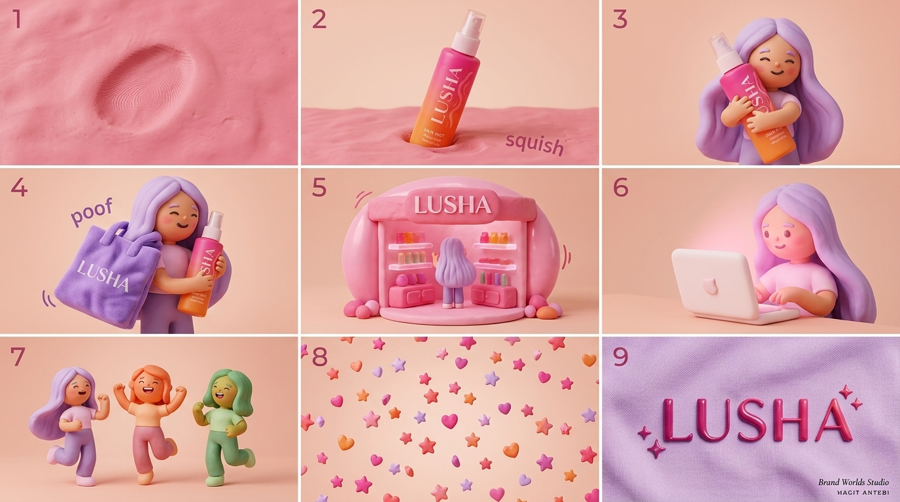
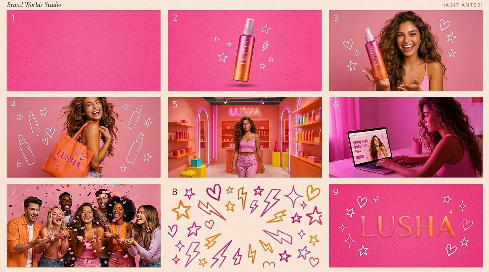

- סרטון AI טוב נקבע בסטוריבורד שלפניו, לא בלחיצה על "צור".
- Google Flow (סוכן הסטוריבורד) + Gemini Omni (מודל הרינדור) — שני כלים, שתי שכבות, הופכים את התכנון לברירת מחדל.
- הסטוריבורד נבנה ב-Flow, הסרטונים יוצרו ב-Omni — אותו רצף של LUSHA, פעמיים: קליימיישן ופוטוגרפי Gen-Z.
- שכבת ההחלטה ברנד-אגנוסטית: סטוריבורד נכון יעבוד גם דרך Runway/Pika, גם על Veo/Kling/Seedance.
- 5 שלבים לבניית סטוריבורד: ביט מרכזי · רצף · קצב · שפת מותג · פרומפט. בסדר הזה.
סרטון AI טוב לא נקבע ברגע שלוחצים "צור". הוא נקבע בסטוריבורד שלפניו. ההבדל בין סרטון מותג שעובד לבין רצף תמונות יפות וחסרות נשמה הוא לא הכלי שבחרת — אלא ההחלטות שקיבלת לפני שהכלי בכלל נדלק. זו שכבת ההחלטה, וזה הדבר היחיד ש-AI לא עושה בשבילך.
נשמע תיאורטי? אז קחו ניסוי קטן שעשיתי השבוע, עם כלי חדש לגמרי.
מה קרה כאן: Google Flow + Gemini Omni
לפני כשבוע, ב-Google I/O ב-19 במאי 2026, גוגל השיקה שני דברים שעובדים ביחד — אבל הם לא אותו דבר:
- Gemini Omni — משפחת המודלים שמייצרת את הווידאו עצמו. מטקסט, תמונות, אודיו וקליפים. זו שכבת הרינדור.
- Google Flow — סביבת היצירה שמעליה. סוכן שיחתי שבונה איתך את הסטוריבורד, מחדד אותו בדיאלוג, ומדייק את הרצף — לפני שהוא שולח לג'נרציה.
אבל הפיצ'ר שתפס אותי הוא לא איכות הרינדור של Omni. זה הסוכן ב-Flow שמקדים את הג'נרציה.
במקום לזרוק פרומפט ולקבל וידאו, Flow בונה איתך סטוריבורד מדויק קודם — מנסח את הרצף, מחדד אותו בשיחה, ומדייק את הפלואו עד שזה בול לבקשה. רק אז Omni מקבל את ההוראה לרנדר. הרעיון הוא לנעול את התוכנית לפני שמישהו בכלל מתחיל לצלם. כלומר: לתכנן, ואז ליצור.
וזה בדיוק מה שמקצוענים עושים כבר שנים. רק שעכשיו זה הפך לברירת מחדל של כלי המוני — וההפרדה בין שתי השכבות (Flow לסטוריבורד, Omni לרינדור) מקבעת בכלי עצמו את העיקרון שהמאמר הזה עומד עליו.
הניסוי: אותו סטוריבורד, שני עולמות מותג
לקחתי מותג דמו מהסטודיו — LUSHA, ספריי שיער — ובניתי איתו, ב-Google Flow, סטוריבורד אחד של תשעה ביטים. הסוכן ב-Flow לא ייצר וידאו בשלב הזה — הוא רק חידד איתי את הרצף, את הקצב, ואת מה שכל פריים צריך לומר. רק כשהסטוריבורד היה נעול, שלחתי אותו ל-Gemini Omni לרינדור.
הביטים שעלו:
מרקם פותח ← המוצר נכנס לפריים ← הגיבורה ← tote bag ← חנות ← אונליין ← קהילה ← פטרן ← לוגו.
ואז ייצרתי את אותו רצף פעמיים ב-Omni, בשני עולמות מותג שונים לחלוטין — עם אותו סטוריבורד שיצא מ-Flow:


אותם תשעה ביטים. אותו סדר. רק הרינדור התחלף.
גרסה א' — Claymation. רך, מישושי, פלסטלינה ורודה. הבקבוק שוקע לתוך המרקם ("squish"), הדמות מחבקת אותו, חנות צעצוע חמודה, שלוש דמויות רוקדות. עולם של חום, ילדותיות וקרבה.
גרסה ב' — פוטוגרפי Gen-Z. ורוד-לוהט, אנרגטי, דוגמניות אמיתיות, חנות ניאון, דודלים של כוכבים וברקים. אותו רצף בדיוק — אבל אסתטיקה של מותג ביוטי צעיר ופרוע.
שימו לב למה שלא השתנה: השלד. תשעת הביטים, הסדר, הקצב, מה כל פריים אומר. רק הרינדור התחלף. זה לא היה מקרי — זה היה ההחלטה שקדמה לכל פרומפט.
הסרטונים עצמם — אותו סיפור, שני עולמות
חוו את שני העולמות בעצמכם → דמו אינטראקטיבי של LUSHA — toggle אחד שמחליף בין Claymation ל-Studio Gen-Z על אותו DOM ואותם תשעה ביטים.
למה זה משנה: שכבת ההחלטה
הנה הנקודה שכל ההייפ סביב כלי וידאו AI מפספס:
ה-AI יודע ליצור. הוא לא יודע מה שווה ליצור.
מודל יכול לרנדר בקבוק ששוקע בפלסטלינה בארבע דקות. הוא לא יכול להחליט שהביט הזה צריך להיות שני בסדר, שהוא צריך לשדר "רכות" ולא "יוקרה", ושאחריו בא חיבוק ולא חנות. את ההחלטות האלה מקבל מי שמכיר את המותג — לא המודל.
לכן אותו סטוריבורד עבד גם בקליימיישן וגם בפוטוגרפי: שכבת ההחלטה היא ברנד-אגנוסטית לסגנון. היא חיה רובד אחד מעל הכלי. תחליפו את Gemini Omni ב-Veo, ב-Kling או ב-Seedance — אם הסטוריבורד נכון, התוצאה תעבוד. אם הסטוריבורד שגוי, שום מודל לא יציל אתכם.
זה למה אני בונה ל-BrandOS שכבת החלטה לפני שה-AI נכנס לתמונה. גוגל פשוט הוכיחה את זה בקנה מידה המוני, באמצעות ההפרדה בין Flow ל-Omni: השכבה שמקבלת החלטות (Flow) ישבה מעל השכבה שמייצרת (Omni) — בדיוק כמו ש-Brand DNA יושב מעל כל סקיל וסוכן ב-BrandOS.
איך לבנות סטוריבורד לסרטון AI (השיטה בקצרה)
לפני שאתם נוגעים בכלי כלשהו, עברו את חמשת השלבים האלה — בסדר הזה:
הביט המרכזי — הרגש האחד
מה הרגש האחד שהסרטון צריך להשאיר? לא "ספריי שיער" — אלא "רכות", "חופש", "כיף". זה מצפן לכל השאר. כל החלטה לאחר מכן נמדדת מולו.
רצף הביטים
שברו את הסיפור ל-7–10 פריימים, כל אחד עם משפט אחד: מה רואים, מה זה אומר. זה השלד — ברנד-אגנוסטי לסגנון. אם השלד שלכם עומד לבד, הוא יעבוד בכל רינדור.
הקצב
איפה האטה, איפה האצה, איפה הביט שעוצר את הגלילה. זמן הוא חלק מהמסר, לא קישוט אחריו. הסטוריבורד צריך לקבוע משך לכל ביט — לפני שמייצרים שנייה אחת.
שפת המותג
רק עכשיו בוחרים אסתטיקה — צבע, מרקם, סגנון רינדור (קליימיישן, פוטוגרפי, אנימציה). הסגנון משרת את הרצף, לא להפך. זו ההחלטה שמייצרת את ההבדל בין שתי הגרסאות של LUSHA — אבל לא את הסיפור עצמו.
הפרומפט
רק בסוף מתרגמים כל ביט לפרומפט לכלי הרינדור. כשעובדים בכלי כמו Google Flow זה קורה אוטומטית — הסוכן מתרגם את הסטוריבורד שבניתם איתו לפרומפט שנשלח ל-Omni. כשעובדים ישירות בכלי גנרציה, התרגום עליכם. אם דילגתם על 1–4 וקפצתם ל-5 — קיבלתם בדיוק את הסרטונים הגנריים שמציפים את הפיד.
כולם נראים אותו דבר כי כולם דילגו על אותו שלב. הבידול נולד בשלבים 1–4, לא בשלב 5.
שאלות נפוצות
מה זה סטוריבורד לסרטון AI?
תכנון פריים-אחר-פריים של הרצף, הקצב והמסר לפני שמייצרים את הווידאו במודל. הוא קובע מה כל שוט אומר ובאיזה סדר, כך שה-AI מקבל הוראות מדויקות במקום ניחוש. בלי סטוריבורד, המודל ממלא את החללים בברירת המחדל שלו.
מה זה Gemini Omni, ומה זה Google Flow?
שניהם הושקו ב-Google I/O במאי 2026 ועובדים יחד, אבל ממלאים תפקידים שונים. Gemini Omni = משפחת מודלים מולטימודלית ליצירה ועריכה של וידאו — שכבת הרינדור. Google Flow = סביבת היצירה שמעליה: סוכן שיחתי שבונה איתך סטוריבורד, מחדד אותו בדיאלוג, ורק אחר כך שולח ל-Omni. הניסוי בכתבה הזו רץ דרך Flow (לסטוריבורד) ו-Omni (לסרטונים).
למה רוב סרטוני ה-AI נראים גנריים?
כי הם נוצרו מפרומפט בודד בלי תכנון. כשמדלגים על הסטוריבורד, המודל ממלא את החללים בברירת המחדל שלו — וברירת המחדל של כל המודלים נראית אותו דבר. הבידול נולד בשכבת ההחלטה, לא ברינדור.
האם הכלי משנה את התוצאה?
פחות ממה שחושבים. סטוריבורד נכון יעבוד דרך כל סביבת יצירה (Google Flow, Runway, Pika) ועל פני כל מודל רינדור (Gemini Omni, Veo, Kling, Seedance). סטוריבורד שגוי לא יינצל על ידי אף מודל. הכלי הוא ביצוע — ההחלטה היא מה שקובע.
האם אותו סטוריבורד באמת עובד בסגנונות חזותיים שונים?
כן — וזו בדיוק ההוכחה בכתבה הזו. שני סרטוני LUSHA נבנו מאותם 9 ביטים, ושניהם עובדים. הקליימיישן משדר חום וקרבה, הפוטוגרפי משדר אנרגיה — אבל שניהם מספרים את אותו סיפור. שכבת ההחלטה לא תלויה ברינדור.
שורה תחתונה
כל אחד יכול לייצר וידאו עכשיו. בדיוק בגלל זה הג'נרציה כבר לא הבידול — התכנון הוא.
Flow לא הופך אתכם לבמאים. הוא רק נותן לכם סטוריבורד מהיר יותר — סוכן שעוזר לנסח, לחדד, ולנעול. Omni לא הופך אתכם ליוצרי תוכן ויזואלי — הוא רק מרנדר מהר יותר את מה שכבר הוחלט. מה שתשימו בתוך הסטוריבורד — הרצף, הקצב, ההחלטה מה שווה ליצור — זה עדיין עליכם. וזה הדבר היחיד שמותג לא יכול להאציל ל-AI.
זה גם הסיבה שעבודה על Brand DNA חשובה הרבה לפני שמתחילים לייצר סרטונים. ה-DNA הוא מה שעונה על השאלות שהסטוריבורד שואל: מה הרגש שלנו? מה הקצב שלנו? מה אנחנו אומרים בלי מילים? בלי תשובות לאלה, הסטוריבורד גנרי, והוידאו אחריו גנרי גם.
הניסוי הזה רץ ב-AI Video Lab של הסטודיו — המקום שבו אני בודקת כלי וידאו AI חדשים מול עולמות מותג, לא מול פרומפטים. ה-Lab עצמו הוא שכבה אחת מתוך המותג שלך כ-OS: ה-DNA קובע מה הרגש, הסקיל קובע מה השפה, והסוכן (במקרה הזה — Google Flow לסטוריבורד, Gemini Omni לרינדור) רק מבצע.
המאמר הזה הוא Cluster #3 מתחת לפילר AI לעסקים קטנים בישראל 2026. אחרי Brand DNA כסקיל (Cluster #1) ואוטומציות בקול המותג (Cluster #2) — זו הסיבה שכל זה נבנה: כדי שהווידאו, התוכן והקול שייצאו דרך כלים כמו Flow ו-Omni באמת ישמעו ויראו כמו המותג שלכם, ולא כמו ברירת המחדל של האינטרנט.
רוצים לראות איך נראית שכבת החלטה שבנויה למותג שלכם?
זה בדיוק מה ש-BrandOS עושה: בונה את שכבת ההחלטה לפני שה-AI נכנס לעבודה — כדי שכל סרטון, פוסט, ותמונה שייצא יישא את החתימה של המותג, לא של הכלי.
דברו איתי בוואטסאפ ←